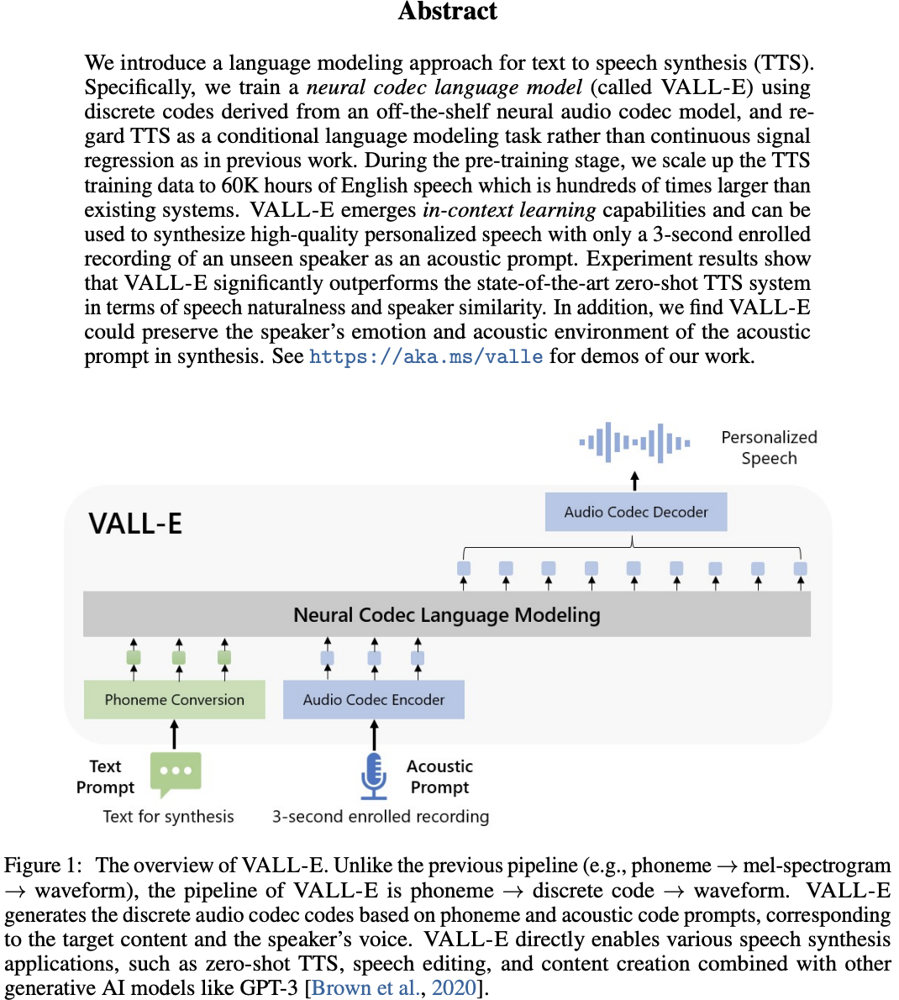
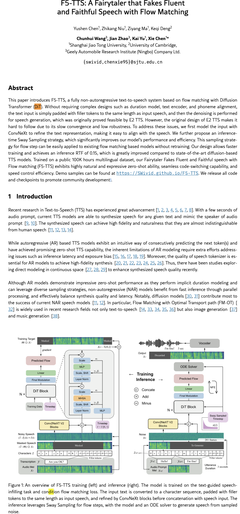
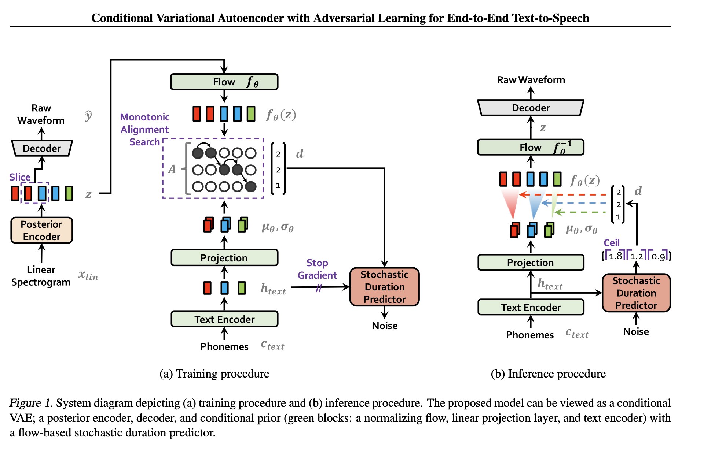
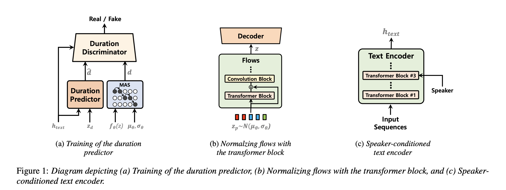
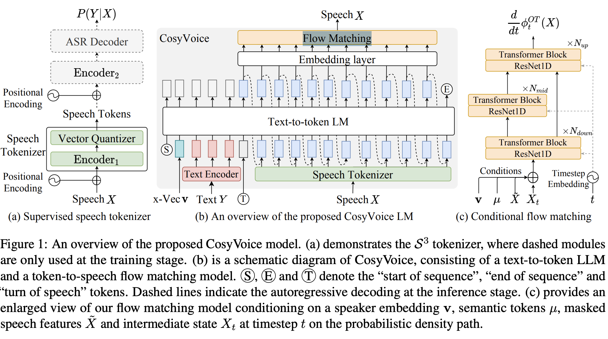

Modern TTS has converged on three paradigms, each with a distinct generative mechanism. Understanding which to use — and when — is the core "build vs buy" decision for production speech systems.
Same architecture as GPT, just predicting audio tokens instead of text tokens. A neural audio codec (e.g. EnCodec) compresses waveforms into a sequence of integers — each integer represents ~20ms of sound. The Transformer learns to predict these integers one by one. Then the codec's decoder converts the integers back into a waveform.
Meanwhile, a reference audio clip (3-10 sec) is also encoded into tokens and prepended as a "prompt" — so the model copies that voice, just like giving GPT a few examples makes it follow the pattern.
| Model | Key detail |
|---|---|
| VALL-E (Microsoft) | First to prove codec LM works for TTS. AR + NAR transformer stages. |
| Bark (Suno) | Open-source, three-stage transformer (semantic → coarse → fine tokens). |
| XTTS (Coqui) | Open-source, good zero-shot voice cloning, practical for production. |
| SPEAR-TTS (Google) | Semantic tokens → acoustic tokens, two-stage decoupling. |
Pros: Natural prosody, strong zero-shot cloning, simple "just predict next token" paradigm.
Cons: Slow (autoregressive = one token at a time), hallucination/repetition artifacts, hard to stream.
Typical latency: ~500ms-2s per utterance.

Note: the tokenizer and the text encoder are different things. The tokenizer (G2P) is a simple converter: string → integer IDs. The text encoder is a neural network (Transformer) that reads those IDs and outputs rich contextual vectors — capturing not just "this is phoneme L" but "this L sits between two vowels in an unstressed syllable, so it should sound softer."
The flow-matching generator (a DiT or UNet, not the same Transformer) takes those vectors and iteratively transforms random noise into a mel spectrogram — a 2D representation of audio that looks like a heat map of frequency over time. Finally, a vocoder neural network converts that spectrogram into an actual audio waveform.
Voice cloning: a speaker embedding (a single vector, ~256 dims, extracted from a reference clip) is fed as a condition to the generator, telling it whose voice to use.
| Model | Key detail |
|---|---|
| F5-TTS | Flow-matching + DiT, strong zero-shot, non-autoregressive. |
| VoiceBox (Meta) | Flow-matching, infilling capability (can edit/replace parts of speech). |
| NaturalSpeech 3 (Microsoft) | Diffusion with factorized codec representations. |
| Grad-TTS | Early diffusion TTS, score-based generation. |
| Stable Audio (Stability) | Latent diffusion for general audio, not just speech. |
Pros: Highest quality, non-autoregressive (generate full utterance at once), fewer hallucination artifacts.
Cons: Multi-step inference (6-50 steps), latency depends on step count, needs separate vocoder.
Typical latency: ~100ms-1s depending on step count (4 steps ~100-200ms, 20 steps ~500ms-1s).
| Diffusion | Flow-matching | |
|---|---|---|
| Process | Stochastic (SDE) | Deterministic (ODE) |
| Steps needed | 20-50 for quality | 6-10 (graceful degradation with fewer) |
| Why fewer steps work | Stochastic noise accumulates | ODE integration stays on trajectory |
| Distillation target | ~4-8 steps | ~1-4 steps (consistency models) |
Flow-matching dominates new TTS research because it's faster and more controllable. Most "diffusion TTS" papers in 2025-2026 are actually flow-matching.

Everything happens in one model, one forward pass. Inside, it combines three techniques: a VAE (variational autoencoder) that learns a compact latent space for speech, normalizing flows that make the latent distribution flexible enough to capture real speech variation, and a GAN discriminator that pushes the output waveform to sound realistic. The decoder is essentially a built-in vocoder.
| Model | Key detail |
|---|---|
| VITS | VAE + normalizing flows + adversarial training. Integrated vocoder. Stochastic duration predictor. |
| VITS2 | Improved duration predictor (adversarial training), better Transformer blocks, more natural prosody. |
Voice cloning: Speaker embedding lookup table — each known speaker gets a learned vector. Speaker must be seen during training. No zero-shot capability.
Pros: Fastest inference (~30ms single pass), no separate vocoder needed, fully end-to-end.
Cons: Less expressive than paradigm 1 & 2, no zero-shot voice cloning (can't clone a new voice without retraining).
Best choice when latency is the absolute priority and quality bar is moderate.


Two stages, each doing what it's best at. Stage 1: an autoregressive Transformer generates coarse semantic tokens that capture the high-level structure — which phonemes, how long, what rhythm and intonation. Stage 2: a flow-matching model takes those tokens (plus a speaker embedding from a reference clip) and generates the fine acoustic detail. Think of stage 1 as writing the sheet music and stage 2 as performing it with a specific voice.
| Model | Key detail |
|---|---|
| CosyVoice (Alibaba) | AR LM for semantic tokens + flow-matching for acoustic generation. |
| VALL-E 2 | AR + NAR stages with flow-matching refinement. |
Pros: Best of both — natural prosody from AR + high quality from flow-matching.
Cons: Complex multi-component pipeline, more moving parts to optimize.
Typical latency: ~300ms-1s (AR bottleneck + flow refinement).

Generating 2 seconds of speech from "Hello world", cloning a 3-second reference voice. Concrete tensor shapes at every step.
sample_rate = 24,000 Hz # output audio
mel_frame_rate = 50 Hz # mel spectrogram frames per second
token_rate = 25 Hz # speech tokens per second
mel_bins = 80 # frequency resolution
codebook_size = 6,561 # FSQ codebook (CosyVoice 2)
# So: 1 speech token = 2 mel frames = 960 audio samples = 40ms# ── What you want the model to say ────────────────────────
text = "Hello world, this is a test."
text_tokens = g2p_tokenizer(text) # rule-based, NOT neural
# text_tokens: (1, 8) int IDs, e.g. [9707, 1879, 11, ...]
# each integer = one BPE subword
# ── The voice you want to clone (3-second reference clip) ─
ref_audio = load("reference.wav") # (72000,) raw samples at 24kHz
prompt_speech_tokens = s3_tokenizer(ref_audio) # separate ONNX model
# prompt_speech_tokens: (1, 75) int IDs, 3s × 25 tokens/s = 75
# each integer ∈ [0, 6561) represents 40ms of speech content
prompt_mel = mel_spectrogram(ref_audio)
# prompt_mel: (1, 80, 150) float, 3s × 50 frames/s = 150
spk_embedding = campplus(ref_audio) # speaker verification network
# spk_embedding: (1, 192) float, L2-normalized
# ONE vector capturing "who this person is"# The LLM is Qwen2.5-0.5B — same family as a chat model!
# It has TWO embedding tables: one for text, one for speech tokens.
text_embeds = text_embed_table(text_tokens) # (1, 8, 896)
prompt_embeds = speech_embed_table(prompt_speech_tokens) # (1, 75, 896)
# Concatenate into one input sequence, just like a GPT prompt:
lm_input = concat([
sos_embed, # (1, 1, 896) start-of-sequence
text_embeds, # (1, 8, 896) "what to say"
task_embed, # (1, 1, 896) "this is a zero-shot TTS task"
prompt_embeds, # (1, 75, 896) "sound like this person"
])
# lm_input: (1, 85, 896)
# Autoregressive loop — generate speech tokens ONE AT A TIME
generated_tokens = []
for step in range(50): # 2s × 25 tokens/s = 50 tokens
hidden = qwen2(lm_input, kv_cache) # (1, 1, 896)
logits = linear_head(hidden) # (1, 6564) → 6561 codes + 3 special
token = sample(logits) # scalar int
generated_tokens.append(token)
# Output: (1, 50) int — 50 speech tokens = 2 seconds of speech
# These encode WHAT to say + rhythm + intonation
# But they are NOT audio yet — just integers!# Step 2a: Encode tokens into conditioning signal μ
all_tokens = concat([prompt_speech_tokens, generated_tokens])
# all_tokens: (1, 125) 75 prompt + 50 generated
mu = token_encoder(all_tokens) # small Transformer, NOT the LLM
# mu: (1, 80, 250) 125 tokens × 2 (upsample to mel rate)
# This is the "GPS directions" — tells flow matching what to generate
# Step 2b: Set up masked mel
masked_mel = concat([
prompt_mel, # (1, 80, 150) ← real reference mel
zeros(1, 80, 100), # (1, 80, 100) ← to be filled in
], dim=time)
# masked_mel: (1, 80, 250)
# Step 2c: ODE solver — iteratively denoise
x = randn(1, 80, 100) # start from pure Gaussian noise
for step in range(10): # 10 ODE steps
t = step / 10 # time: 0.0 → 1.0
# U-Net sees: current noisy mel + conditioning + speaker + timestep
unet_input = concat([x, mu_gen_region], dim=channels)
# unet_input: (1, 160, 100) 80 (noisy mel) + 80 (conditioning)
velocity = unet(unet_input, spk_embedding, t)
# velocity: (1, 80, 100) direction to move x
x = x + (1/10) * velocity # Euler step
# Output: (1, 80, 100) float — mel spectrogram for 2s of speech
# 80 frequency bins × 100 time frames
# This is a "heat map" of how the audio soundsmel = x # (1, 80, 100) from flow matching
f0 = f0_predictor(mel) # pitch contour
excitation = harmonic_source(f0) # sine waves at predicted pitch
waveform = hifigan_decoder(mel, excitation)
# waveform: (1, 48000) 100 frames × 480 samples/frame
# = 48,000 samples ÷ 24,000 Hz = 2.0 seconds of audio
save("output.wav", waveform, sr=24000) # done!| Name | What is it? | Shape (this example) |
|---|---|---|
| G2P tokenizer output | Integer IDs — one per subword, rule-based lookup | (1, 8) |
| Text embeddings | Float vectors — one per token, from an embedding table | (1, 8, 896) |
| Speech tokens | Integers — each = 40ms of speech, from LLM or S3 tokenizer | (1, 50) |
| Speaker embedding | One float vector for the whole clip — "who is speaking" | (1, 192) |
| μ (conditioning) | Float vectors — encoded speech tokens, guides flow matching | (1, 80, 250) |
| Mel spectrogram | 2D float matrix — frequency × time, "heat map of sound" | (1, 80, 100) |
| Waveform | 1D float array — the actual audio signal at 24kHz | (1, 48000) |
| Approach | Mechanism | Data needed |
|---|---|---|
| Codec LM (VALL-E, XTTS) | Prepend reference audio tokens as prompt — in-context learning | 3-10 sec clip |
| Flow-matching (F5-TTS, VoiceBox) | Speaker embedding from reference conditions the generator | 3-10 sec clip |
| VITS | Speaker embedding lookup — must be in training set | Training data per speaker |
| LoRA fine-tuning (any paradigm) | Adapt model weights to target speaker for consistency | 5-30 min recordings |
Zero-shot (top 3 rows) handles most cases. LoRA is for when zero-shot quality isn't enough — main characters needing thousands of consistent lines, custom voices that don't exist, etc. This is the "production gap" that justifies fine-tuning.
| Paradigm | Typical latency | Why |
|---|---|---|
| VITS (single-pass) | ~30-50ms | One forward pass |
| Flow-matching (4 steps) | ~100-200ms | 4 forward passes |
| Flow-matching (20 steps) | ~500ms-1s | 20 forward passes |
| AR codec LM | ~500ms-2s | Sequential token generation |
| Hybrid AR + flow | ~300ms-1s | AR bottleneck + flow refinement |
| Technique | Applies to | Speedup |
|---|---|---|
| Step distillation / consistency models | Flow-matching / diffusion | 20 steps → 2-4 steps |
| INT8 quantization | All paradigms | ~1.5-2x (audio sensitive to INT4) |
| Generate in codec latent space | Flow-matching / diffusion | Orders of magnitude less compute vs raw waveform |
| Streaming chunk generation | All paradigms | Reduces time-to-first-audio |
| Speculative decoding | AR codec LM | ~2-3x token throughput |
Human conversational reaction time is ~200ms. If an NPC takes >500ms to respond, it feels robotic and breaks immersion. The target for interactive game dialogue is:
| Architecture | Problem | Typical latency |
|---|---|---|
| Diffusion TTS (20-50 steps) | Must denoise full spectrogram before any audio plays | >1s |
| AR codec LM (VALL-E) | Sequential token generation: 3s speech = ~150 tokens generated one by one | ~500ms-2s |
| Classical TTS (Tacotron) | Generates full mel before vocoder runs | ~1-2s |
All of these generate the complete utterance before playback starts. Games need the opposite.
Like this:
Player: "Where is the sword?"
NPC response timeline:
0ms → LLM starts generating text tokens
80ms → first text tokens arrive at TTS
150ms → first audio chunk plays: "It's..."
200ms → next chunk plays: "in the..."
300ms → "...cave to the north"
(all three stages overlapping, not sequential)This is the hard problem most ML people miss. Prosody (intonation, emphasis, pacing) depends on future context:
"I never said he stole the money"
^--- emphasis on different words completely changes meaning
Streaming TTS doesn't know future words yet.
So: latency ↔ prosody quality is a fundamental tradeoff.Lower latency = less context for prosody decisions = less natural speech. This is why single-pass models (VITS) sound flat — they commit to prosody immediately without look-ahead.
| Strategy | How it works | When to use |
|---|---|---|
| Pre-generated audio | Record or synthesize common NPC lines offline, store as audio assets | Scripted dialogue, high-frequency lines |
| Short utterance generation | Keep NPC responses short (1-2 sentences), generate per-sentence | Interactive dialogue, procedural NPCs |
| Streaming vocoder | HiFi-GAN / BigVGAN in streaming mode — synthesize audio chunk by chunk as mel arrives | Any mel-based TTS pipeline |
| Chunk-based flow-matching | Generate mel in overlapping chunks (e.g., 500ms each), play first chunk while generating next | When flow-matching quality is needed |
| Non-AR models (VITS/FastSpeech) | Parallel inference, entire utterance in one pass | When latency is king, quality bar is moderate |
In a game speech agent (ASR → LLM → TTS), the bottleneck is often not TTS:
| Stage | Latency budget | Key optimization |
|---|---|---|
| ASR (player speech → text) | ~50ms | Streaming Conformer or Distil-Whisper, INT8 |
| LLM (reasoning + text generation) | ~80-100ms first token | INT4 (AWQ/GPTQ), KV cache quantization, speculative decoding |
| TTS (text → first audio chunk) | ~50-70ms | Streaming vocoder, short chunks, or single-pass model |
| Total time-to-first-audio | ~200ms | All three stages must stream and overlap |
Key insight: the system must be designed for pipeline parallelism — ASR streams partial transcripts to LLM, LLM streams tokens to TTS, TTS streams audio to the player. No stage waits for the previous one to finish.
"The main challenge is latency. Traditional TTS generates the full acoustic representation before synthesis, which introduces hundreds of milliseconds of delay. In interactive settings like games, we need streaming generation where speech starts playing within ~200ms. That requires architectures that support incremental synthesis — streaming vocoder, chunk-based generation — while still maintaining natural prosody, which is fundamentally hard because prosody depends on future context. The practical solution is a combination of pipeline parallelism across ASR/LLM/TTS, short utterance generation, pre-generated common lines, and choosing the right model for each use case: single-pass for speed, flow-matching for quality, pre-recorded for critical dialogue."
"There are three TTS paradigms: autoregressive codec LMs like VALL-E that treat speech as token prediction — natural but slow; flow-matching models like F5-TTS that generate in continuous latent space — high quality and parallelizable but multi-step; and single-pass models like VITS — fastest but least expressive. The trend is hybrid: AR for coarse prosody, flow-matching for acoustic quality. For production, the engineering challenge is picking the right quality-latency tradeoff and applying step distillation, quantization, and streaming to push that frontier."